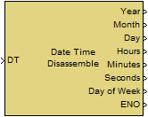

| MBDS Environment |
|
Date Time Disassemble |
MATLAB Helpdesk |
General
Disassembles a uint32 data and time signal into its individual date and time components, i.e. year, month, day, hours, minutes and seconds.
Library
DescriptionMBDS Blockset

The bock disassembles a data and time signal with data type uint32 into its elements year, month, day, hours, minutes and seconds. Additionally, the day of week number is provided. If the date and time signal exceeds the valid range of 1970-01-01-00:00:00 to 2105-12-31-23:59:59 the signal is limited to the valid range before it is disassembled into it's components.
The block has an ENO (Error Number Output) output port to indicate an error. The ENO output is set to false if the input data is invalid or out of range, otherwise it is set to true. The ENO output port can be hidden/shown via the parameter Show ENO port in the Main register card of the block mask.
Inputs and Outputs
Example
Port I/O Data Type Description DT
In
uint32 Date and time signal Year
Out uint16 Year from 1970 to 2105
Month Out uint8 Month from 1 to 12 Day Out uint8 Day from 1 to 31 Hours Out uint8 Hours from 1 to 23 Minutes Out uint8 Minutes from 0 to 59 Seconds Out uint8 Seconds from 0 to 59 Day of Week Out uint8 Day number 1 (monday) to 7 (sunday) ENO Out boolean ENO is false if an error has been occurred. If the block has been processed correctly the ENO Output is set to true.
Refer to the example.